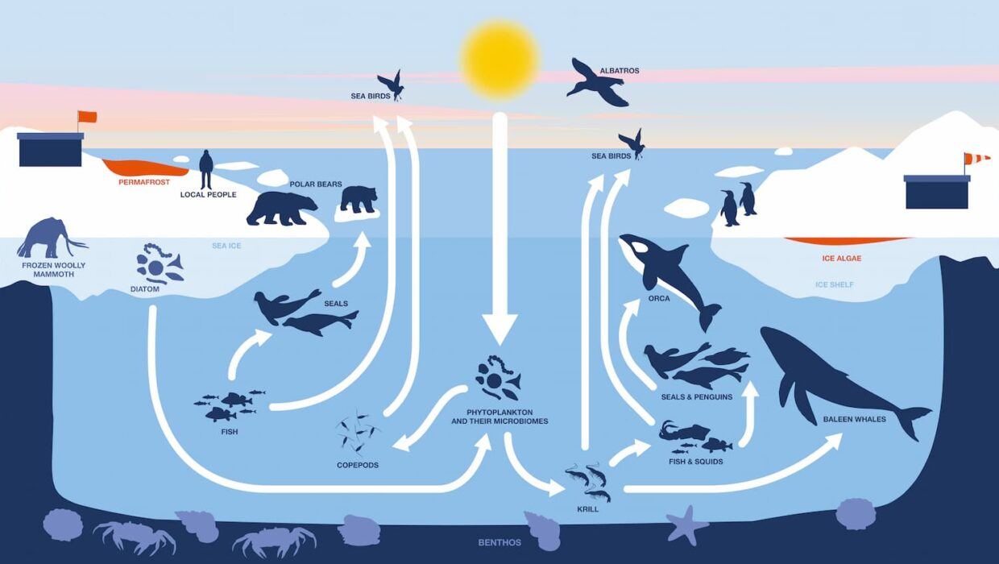

L’Arctique est une région de 16,5 millions de km² aux confins du pôle Nord occupé en son centre par
l’océan glacial Arctique, d’une superficie équivalente à cinq fois celle de la mer Méditerranée. Les
conditions de glace et de nuits longues et intenses : 5 à 6 mois de nuits polaires par an à ces
latitudes, sont à l’origine d’une biodiversité singulière.
La région Arctique englobe le pôle Nord de la Terre et comprend six pays : la Russie, la Norvège, le
Danemark, l'Islande, le Canada, et les États-Unis. La banquise, les espèces animales et végétales et les
populations autochtones (inuits, samies, yakoutes) en font l’un des territoires les plus emblématiques
de la planète.
Les paysages variés de la région (de la banquise aux zones humides côtières, en passant par la toundra
des hautes terres, les montagnes, les larges rivières et la mer) sont le refuge d'une faune abondante et
de nombreuses cultures. Parmi les espèces présentes en Arctique, l’ours polaire est la plus symbolique,
son incroyable adaptation à l’environnement hostile de la région en fait une espèce à part.
Les remarquables eaux de la mer de Béring attirent de nombreux mammifères marins tels que les baleines
grises - qui parcourent de grandes distances afin de nourrir et élever leurs petits - et fournissent la
moitié des poissons pêchés aux États-Unis. Les sites de pêche de cette mer sont aussi indispensables aux
communautés locales, dont les moyens de subsistance reposent sur la pêche, qu’à plusieurs autres
millions de personnes dans le monde entier qui consomment ce poisson. La mer qui borde la Russie et les
rivières de la péninsule du Kamtchatka concentrent, quant à elles, jusqu'au quart de tous les saumons
sauvages du Pacifique, qui alimentent des animaux sauvages, comme l’ours brun du Kamtchatka.

Menaces sur la vie sauvage dans nos régions polaires
CHANGEMENT CLIMATIQUE: Le changement climatique modifie déjà les habitats dans le monde entier. Les régions polaires se sont réchauffées de près de 10 degrés Fahrenheit depuis 1900, et continuent de se réchauffer deux à trois fois plus vite que la moyenne du reste du monde. La couverture de glace d'été se réduit, le pergélisol fond et les côtes sont exposées à l'érosion, ce qui réduit l'effet d'albédo et renforce donc le réchauffement. Dans l'Arctique, des animaux tels que les ours polaires et les morses perdent leur habitat. La glace de mer disparaît également en Antarctique, où sa disparition menace d'anéantir les espèces de pingouins qui y vivent.SURPÊCHE: Dans le monde entier, l'homme retire des poissons de l'eau plus vite qu'ils ne peuvent se reproduire et être remplacés. Avec la diminution de la glace de mer, la pêche dans l'Arctique devient une question d'intérêt croissant. Dans la mer de Barents, une zone relativement peu perturbée au nord de la Norvège et de la Russie, la surpêche a entraîné un déclin des espèces de poissons et menacé l'avenir d'importantes pêcheries telles que la morue.
POLLUTION: Les polluants issus des activités humaines ont tendance à se frayer un chemin vers les régions polaires, transportés par les courants océaniques, les oiseaux migrateurs et d'autres moyens. Les débris marins, qui peuvent s'accrocher à la faune, peuvent rester sur place pendant de longues périodes, car les longs hivers, sombres et froids de la région empêchent la décomposition des produits chimiques. En outre, les contaminants toxiques se concentrent au fur et à mesure qu'ils remontent la chaîne alimentaire - un processus appelé bioamplification - et leur concentration est la plus élevée chez les prédateurs supérieurs, comme les ours polaires. Au sommet de la chaîne alimentaire, les humains sont également exposés à des niveaux élevés de ces toxines dans les aliments traditionnels de l'Arctique.
DEVELOPMENT: L'Arctique renferme certaines des plus grandes réserves de pétrole et de gaz inexploitées au monde, mais l'exploitation de ces précieuses ressources, que ce soit sur terre ou en mer, peut avoir des effets dévastateurs sur l'environnement. L'infrastructure de ces projets de développement peut détruire l'habitat, fragmenter les voies de migration et drainer les ressources en eau douce. Et lorsque les choses tournent mal et qu'un déversement de pétrole se produit, la faune arctique peut être tuée et l'habitat contaminé pendant des années.L'Arctique recèle certaines des plus grandes réserves de pétrole et de gaz inexploitées au monde, mais l'accès à ces précieuses ressources - que ce soit sur terre ou en mer - peut avoir des effets environnementaux dévastateurs. L'infrastructure de ces projets de développement peut détruire l'habitat, fragmenter les voies de migration et drainer les ressources en eau douce. Et lorsque quelque chose tourne mal et qu'une marée noire se produit, la faune arctique peut être tuée et l'habitat contaminé pendant des années.